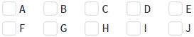
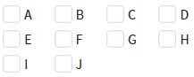
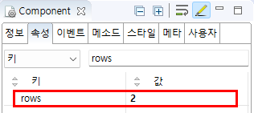

Checkbox의 'rows' 속성을 사용하여 설정된 수만큼 행을 구성하여 항목을 표시한 예제입니다. 예를 들어, 속성의 값이 '2'로 설정되면 항목이 2개의 행에 나뉘어 표시됩니다.
'cols' 속성과 동시에 사용할 수 없습니다. 두 속성이 모두 설정되면 'rows' 속성의 설정은 무시됩니다.
설정된 수만큼 행을 구성하여 항목을 표시하기
예제에서 사용한 Checkbox의 항목은 모두 동일하게 설정되었습니다. 'rows' 속성 설정에 따라 항목이 표시된 실행 결과를 비교합니다.
Checkbox에 설정된 항목은 'A', 'B', 'C', 'D', 'E', 'F', 'G', 'H', 'I', 'J' 입니다.
'rows' 속성이 '2'로 설정되면 항목이 2개의 행에 나뉘어 표시됩니다. 첫 번째 행에는 'A', 'B', 'C', 'D', 'E' 항목이 표시되고, 두 번째 행에는 'F', 'G', 'H', 'I', 'J' 항목이 표시됩니다.
Image 1.브라우저(Chrome) 실행 예시

'rows' 속성이 '3'으로 설정되면 항목이 3개의 행에 나뉘어 표시됩니다. 첫 번째 행에는 'A', 'B', 'C', 'D' 항목이 표시되고, 두 번째 행에는 'E', 'F', 'G', 'H' 항목이 표시됩니다. 마지막으로 세 번째 행에는 'I', 'J' 항목이 표시됩니다.
Image 2.브라우저(Chrome) 실행 예시

[필수] rows="행의 수"
항목을 표시할 행의 수를 설정합니다. 'cols' 속성과 동시에 사용할 수 없습니다. 두 속성이 모두 설정되면 'cols' 속성이 동작됩니다.
Image 3.웹스퀘어 스튜디오의 Component View 예시

rows